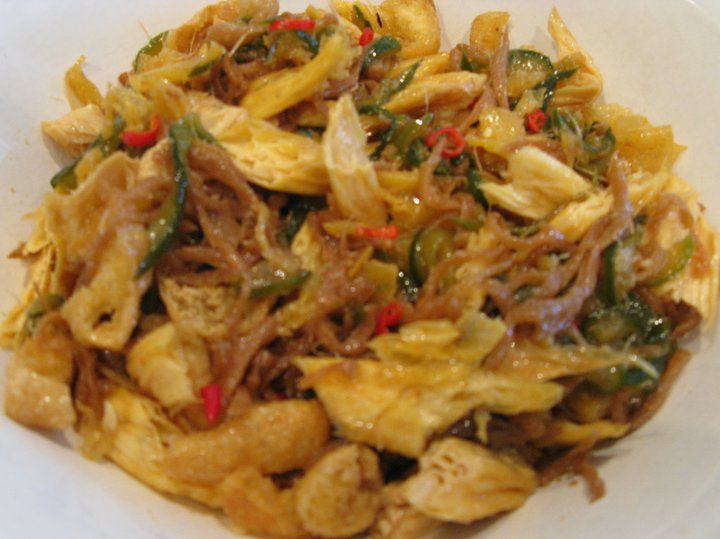

Cùng bắt tay làm thử thôi nào!
Nguyên liệu:
1. Củ cải muối ( 200g ): cắt sợi nhỏ, vừa ăn. ( Có thể mua loại đã cắt sợi sẵn, mình sẽ đỡ mắc công hơn). Ngâm nước, xả lại nhiều lần cho hết mặn.
2. Dưa leo ( 3-4 trái ): chẻ dọc, bỏ ruột, cắt xéo như kiểu làm dưa chua, không nên cắt quá mỏng sẽ làm dưa leo không giòn. Cắt xong để vào 1 ít muối, xốc đều rồi xả lại nước, vắt thật ráo.
3. Khóm ( nửa trái -1 trái ): gọt sạch vỏ, bỏ cùi, cắt mỏng và nhỏ, vừa miệng ăn, sau đó vắt ráo nước.
4. Tàu hủ ky ( 1 gói khoảng 350g ): ngâm nước ấm cho Tàu hủ ky nở ra.
5. Riềng tươi ( 1 nhánh nhỏ ): cắt sợ nhỏ, băm lại miếng vuông nhỏ.
6. Tàu hủ chiên ( 2-3 miếng ): cắt sợi lớn hơn đầu đũa một chút.
7. Ớt tươi : bỏ hạt, cắt nhỏ. Tùy vào khả năng ăn cay của mình thì mọi người sẽ chuẩn bị phần này nhiều hay ít.
Thực hiện:
_ Cho một lượng dầu vừa phải vào chảo, dầu nóng cho Tàu hủ ky vào chiên vàng, vớt ra để trên đĩa có lớp khăn giấy để hút bớt dầu còn dính trên Tàu hủ ky. Sau đó, cắt nhỏ Tàu hủ ky cho vừa miệng ăn.
_ Cũng lượng dầu lúc nãy còn lại trên chảo, bỏ Tàu hủ vào chiên sơ để ngon hơn, vớt ra để 1 bên đĩa Tàu hủ ky để Tàu hủ cũng được hút bớt dầu từ khăn giấy.
_ Xào Củ cải muối cho săn lại, lúc xào cho chút nước tương và đường, nêm cho vừa ăn.
_ Xào Dưa leo, vì mình đã xốc muối dưa leo nên khi xào phải nêm trước khi quyết định cho thêm đường và nước tương, nhớ làm cho vừa ăn.
_ Xào khóm cho săn lại và ráo nước. Gợi ý: mình không nêm gia vị cho Khóm đậm đà như Củ cải muối và Dưa leo, nên giữ nguyên hương vị chua chua ngọt ngọt của Khóm, chỉ làm cho Khóm chín hơn thôi.
_ Xào Riềng đến khi hơi khô lại và có mùi thơm.
Hoàn tất: Trộn đều tất cả. Có thể Dưa leo và Khóm khi xào xong sẽ còn lại chút nước, khi lấy ra nhớ bỏ nước này, chỉ lấy phần Dưa leo và Khóm thật ráo nước thôi. Đừng quên trộn thêm ớt tươi vào.
Mắm chay có vị đậm đà của Củ cải muối, giòn giòn của Dưa leo, chua ngọt của khóm hòa tan với hương vị lạc "rất chay" của Tàu hủ ky và Tàu hủ chiên, mùi thơm lừng của Riềng và cay nồng của Ớt. Món này có thể ăn với cơm có kèm rau sống; ăn với bún; cuốn bánh tráng như kiểu bì chay; hoặc mình cũng vô cùng yêu thích khi để Mắm chay vào bánh mì có chút nước tương ớt nữa là ngon tuyệt cú mèo.